Continuous sequential data ke temporal patterns ko samajhna: Daily website traffic se lekar 24-hour diurnal temperature cycles, multi-series hue comparisons, rolling average smoothing, uncertainty intervals (errorbar), aur figure-level relplot(kind='line') faceting ki complete practical guide in natural Hinglish.
Data analytics me hum aksar aise sawal puchte hain jahan samay (time) ke sath cheezein badalti hain: "Pichhle 7 din me hamari website ke daily visitors badhe hain ya kam hue hain?" Ya "Poore 24 ghante me city ka ambient temperature kab sabse thanda tha aur kab peak par pahucha?"
Aise sequential, ordered datasets ke liye hamara primary visualization tool hota hai: Line Plot (Line Chart). Scatter plot ki tarah ye discrete points draw karta hai, lekin ek bohot bada farak hota hai — ye points ko chronological order me straight lines se jod deta hai!
Dots ko line se jodne ka matlab hai: Continuity. Hum reader ko ye visual cue dete hain ki data ek continuous sequence (timeline) follow kar raha hai. Line ka slope (dhalan) instant velocity aur direction batata hai — line upar ja rahi hai to growth hai, niche ja rahi hai to decline hai!
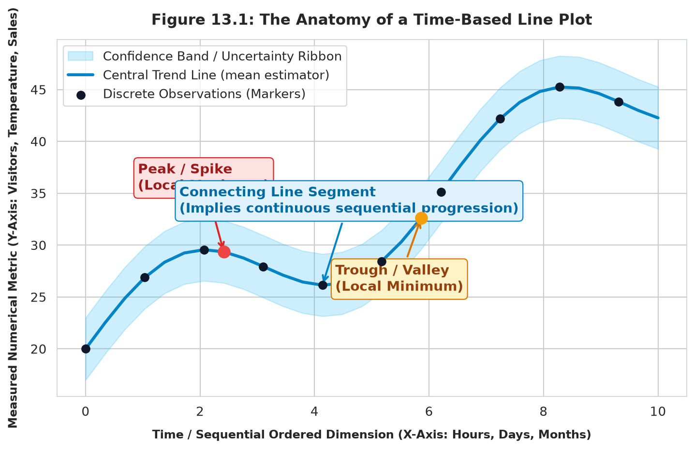
Ek naye startup ke 7 din ka verified daily traffic dekhiye (Monday to Sunday):
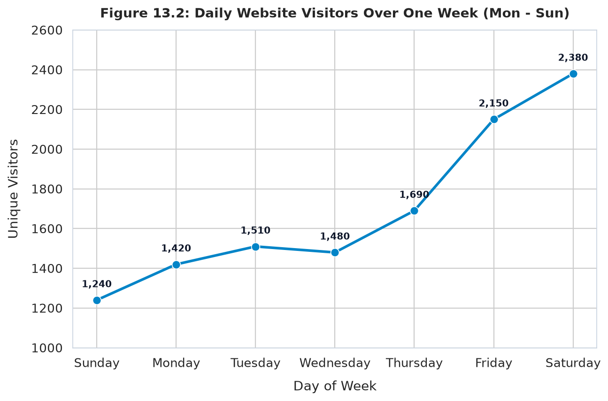
IoT weather sensors har ghante temperature (°C) record karte hain. 24 ghante ka continuous diurnal pattern dekhiye:
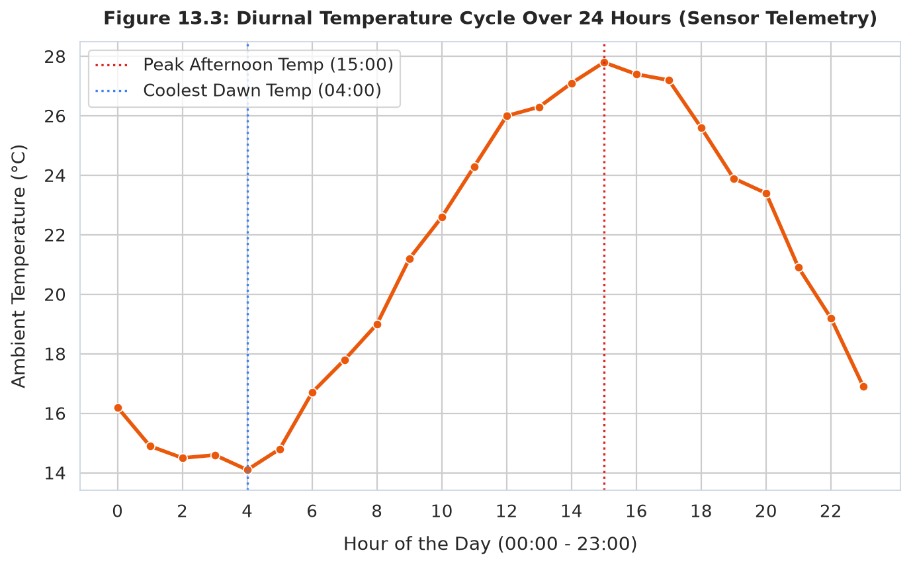
Agar aapka X-axis ordered sequence nahi hai (jaise unordered categories: Apple, Orange, Banana), to line plot kabhi nahi banana chahiye! Unordered categories ke beech line draw karna false connection dikhata hai. Line plot sirf tab use karein jab X-axis naturally sorted ho — jaise Timestamps, Age, Distance, ya Experimental Steps.
Time-series visualization me 80% errors data formatting ki wajah se hote hain. Agar CSV file me dates strings (object dtype) ke roop me loaded hain, to Matplotlib unhe discrete textual labels samajhta hai, jisse chronological sorting aur date tick formatting fail ho jati hai!
| Concept | Example Format | Pandas Representation & Handling |
|---|---|---|
| Date | 2026-03-15 |
Calendar date; no time component. |
| Time | 14:30:00 |
Time of day within a 24-hour cycle. |
| Timestamp / Datetime | 2026-03-15 14:30:00 |
Pandas Timestamp (datetime64[ns]) — gold standard. |
| Frequency / Interval | freq="D", "h", "5min" |
Uniform spacing between consecutive observations. |
| Chronological Order | Jan 1 → Jan 2 → Jan 3 | Must always sort by datetime before plotting (df.sort_values()). |
import pandas as pd
# Load raw traffic data
df_raw = pd.read_csv("website_traffic_90days.csv")
print("Before Conversion - Date Dtype:", df_raw["Date"].dtype)
# 1. Parse string to datetime64
df_raw["Date"] = pd.to_datetime(df_raw["Date"])
print("After Conversion - Date Dtype:", df_raw["Date"].dtype)
# 2. Sort chronologically
df_raw = df_raw.sort_values("Date").reset_index(drop=True)
# 3. Extract temporal components effortlessly
df_raw["Day_Name"] = df_raw["Date"].dt.day_name()
df_raw["Month"] = df_raw["Date"].dt.month_name()
df_raw["Is_Weekend"] = df_raw["Date"].dt.dayofweek >= 5
print("
Sample Processed Records:
", df_raw[["Date", "Day_Name", "Is_Weekend", "Visitors"]].head(3))is_monotonic_increasingPlotting se pehle hamesha check karein: df["Date"].is_monotonic_increasing. Agar ye True return karta hai, to aapka data strictly ascending chronological order me hai aur lines aapas me zigzag backward cross nahi karengi!
sns.lineplot() — Syntax & Daily TrafficSeaborn me time-series line plot banana bohot clean hai. Iska basic syntax hai:
sns.lineplot(data=df, x="Date_Column", y="Numeric_Value", **kwargs)| Parameter | Default | Description & Behavior |
|---|---|---|
data |
None |
Tidy pandas DataFrame containing variables. |
x, y |
None |
Time variable (X) and numerical metric (Y). |
hue |
None |
Categorical variable producing distinct colored lines. |
style |
None |
Categorical variable producing different dash patterns (solid, dashed). |
size |
None |
Variable mapped to line stroke thickness. |
estimator |
'mean' |
Method for aggregating repeated observations at the same X coordinate. |
errorbar |
('ci', 95) |
Uncertainty representation (e.g. ('ci', 95), 'sd', or None). |
sort |
True |
Automatically sorts data along the X axis before drawing lines. |
markers |
None |
Draws markers at data points (e.g. markers=True or dict). |
dashes |
True |
Controls whether lines use dashed styles when style is mapped. |
ax |
None |
Matplotlib axes object for multi-plot placement. |
import seaborn as sns
import matplotlib.pyplot as plt
import matplotlib.dates as mdates
import pandas as pd
df_sales = pd.read_csv("retail_store_sales_365days.csv")
df_sales["Date"] = pd.to_datetime(df_sales["Date"])
# Filter 30-day snapshot and aggregate daily store revenue
df_sales_30 = df_sales[df_sales["Date"] <= "2025-01-30"].groupby("Date", as_index=False)["Sales_USD"].sum()
plt.figure(figsize=(10, 5.5))
sns.set_theme(style="whitegrid", font_scale=1.05)
sns.lineplot(
data=df_sales_30,
x="Date",
y="Sales_USD",
marker="s",
markersize=5,
color="#10B981",
linewidth=2.2
)
plt.title("Figure 13.5: Daily Online Store Revenue (30-Day Snapshot)", fontweight="bold", pad=12)
plt.xlabel("Date (January 2025)", labelpad=10)
plt.ylabel("Daily Sales ($ USD)", labelpad=10)
plt.gca().xaxis.set_major_formatter(mdates.DateFormatter("%d-%b"))
plt.xticks(rotation=45)
plt.tight_layout()
plt.show()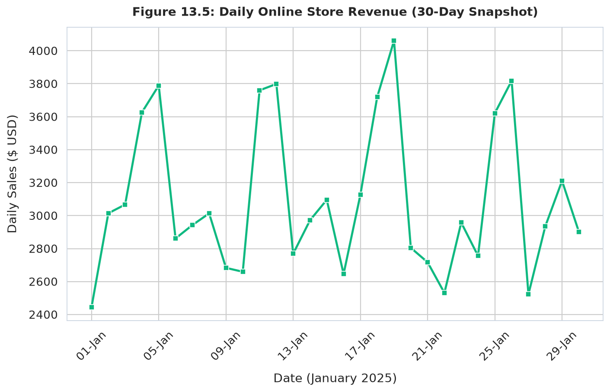
Time series data me do forces hamesha ek sath kaam karti hain:
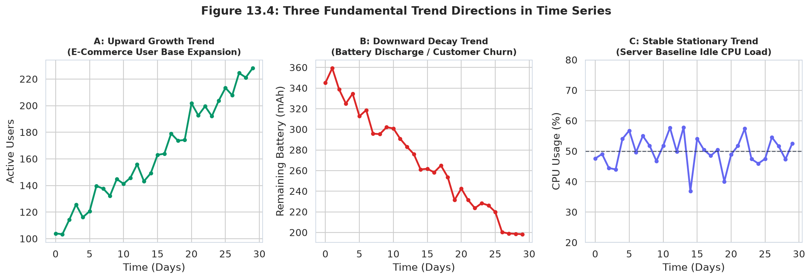
| Trend Type | Behavior Over Time | Real-Life Business Example | Analytical Decision |
|---|---|---|---|
| Upward Growth | Net values steadily climb despite minor dips. | Active registered users; monthly recurring revenue. | Invest in server infrastructure & customer support. |
| Downward Decay | Net values progressively decline over time. | Smartphone battery capacity; legacy app downloads. | Trigger churn intervention campaigns or battery replacement. |
| Stationary / Stable | Values oscillate around a constant horizontal mean. | Idle server CPU load; warehouse baseline temperature. | Maintain automated monitoring thresholds. |
Ek single high value dekh kar ye conclude mat kijiye ki "Trend change ho gaya hai!" Ho sakta hai Monday ko marketing email blast gaya ho jisne 1-day spike create kiya. True trend hamesha multiple consecutive periods (weeks/months) ke aggregate baseline se judge hota hai.
hueReal-world analytics me hum rarely single time series analyze karte hain. Usually hume multiple segments ko compare karna hota hai: "Mobile users badh rahe hain ya Desktop users?" Aur "Electronics ki sales Apparel se fast grow kar rahi hai ya slow?"
Seaborn me hue="Category_Column" pass karke hum ek hi chart me multiple colored lines draw kar sakte hain. Seaborn automatically har line ko distinct color assign karta hai aur automatic legend generate karta hai!
Niche 30 days ka website traffic teen platforms — Mobile, Desktop, aur Tablet — ke beech compare kiya gaya hai:
import seaborn as sns
import matplotlib.pyplot as plt
import matplotlib.dates as mdates
import pandas as pd
df_traffic = pd.read_csv("website_traffic_90days.csv")
df_traffic["Date"] = pd.to_datetime(df_traffic["Date"])
# Filter 30 days snapshot for North America
df_sub = df_traffic[(df_traffic["Date"] <= "2026-01-30") & (df_traffic["Region"] == "North America")]
plt.figure(figsize=(10, 5.5))
sns.set_theme(style="whitegrid", font_scale=1.05)
# Plot multi-series lines by device
sns.lineplot(
data=df_sub,
x="Date",
y="Visitors",
hue="Device",
palette="tab10",
linewidth=2.4
)
plt.title("Figure 13.6: Daily Visitors by Access Device (hue='Device')", fontweight="bold", pad=12)
plt.xlabel("Date (January 2026)", labelpad=10)
plt.ylabel("Unique Daily Visitors", labelpad=10)
plt.gca().xaxis.set_major_formatter(mdates.DateFormatter("%b %d"))
plt.xticks(rotation=35)
plt.legend(title="Device Type", frameon=True)
plt.tight_layout()
plt.show()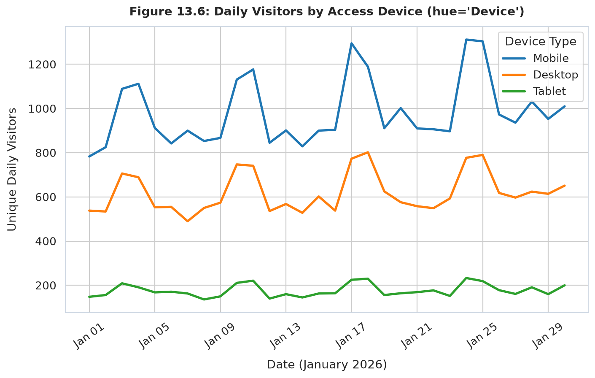
Retail business me different departments ki growth rate aur weekend volatility compare karne ke liye category-wise line plot perfect hai:
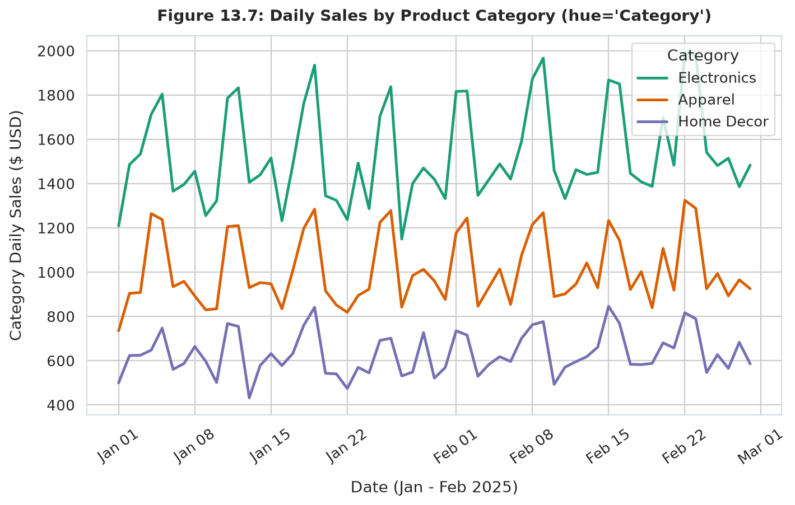
Agar aap ek hi plot me 8-10 se zyada lines stack kar denge, to chart aapas me ulajhkar Spaghetti Chart ban jayega — jahan reader ye nahi samajh payega ki kaunsi line kahan ja rahi hai! Rule of thumb: Ek single axes par maximum 4 ya 5 lines rakhein. Agar categories zyada hon, to Section 7 me explain kiye gaye sns.relplot() faceting ka use karein!
style, size & unitsProfessional publications aur accessible design me sirf color par depend karna risky hota hai — color-blind readers ya black-and-white photocopy prints me lines aapas me mix ho jati hain. Is problem ko solve karne ke liye Seaborn style aur size parameters provide karta hai.
| Parameter | Visual Mechanism | Recommended Use Case |
|---|---|---|
style |
Dashes (solid, dashed, dotted) & Markers | Distinguishing environments (Production Solid vs Staging Dashed). |
size |
Line stroke thickness (linewidth) | Emphasizing a primary target series (e.g. Actual vs Projected). |
units |
Sampling unit identifier | Drawing multiple individual trajectories without aggregating them into a single line! |
import seaborn as sns
import matplotlib.pyplot as plt
import matplotlib.dates as mdates
import pandas as pd
# Benchmark comparison dataset
sns.lineplot(
data=df_bench,
x="Date",
y="Response_Time",
hue="Environment",
style="Environment",
markers=True, # Draw circle/square glyphs on vertices
dashes=True, # Solid line for Prod, dashed for Staging
palette={"Production": "#2563EB", "Staging": "#DC2626"},
linewidth=2.5
)
plt.title("Figure 13.8: Multi-Encoding Line Plot (hue & style='Environment')", fontweight="bold", pad=12)
plt.ylabel("Latency (Milliseconds)")
plt.gca().xaxis.set_major_formatter(mdates.DateFormatter("%b %d"))
plt.xticks(rotation=35)
plt.show()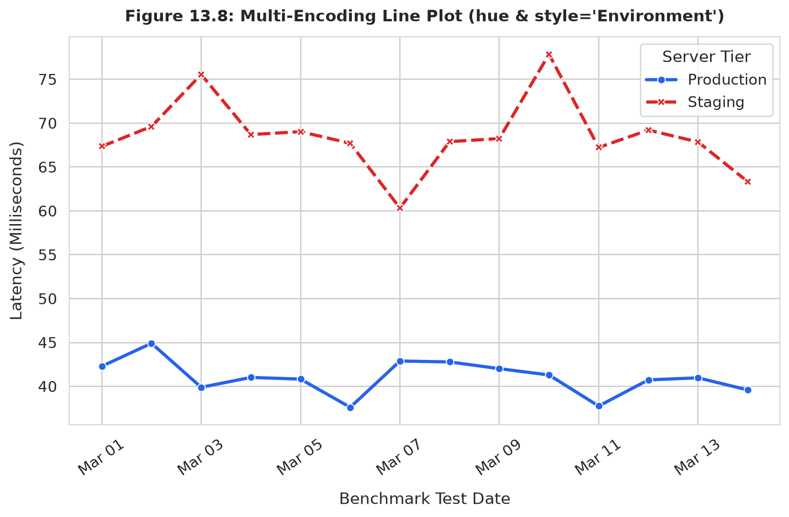
sns.relplot()Jab aapko multiple categories ko compare karna ho bina unhe ek hi canvas me crowd kiye, to Seaborn ka figure-level function sns.relplot(kind="line") sabse elegant solution hai.
Ye function automatic FacetGrid create karta hai jahan har category ko synchronized axes ke sath apna dedicated subplot panel milta hai!
import seaborn as sns
import matplotlib.pyplot as plt
import matplotlib.dates as mdates
import pandas as pd
df_traffic = pd.read_csv("website_traffic_90days.csv")
df_traffic["Date"] = pd.to_datetime(df_traffic["Date"])
# Create figure-level multi-panel line plot by Region
g = sns.relplot(
data=df_traffic[df_traffic["Date"] <= "2026-02-15"],
x="Date",
y="Visitors",
col="Region", # One subplot column per region!
kind="line",
color="#0284C7",
linewidth=2.2,
height=3.8,
aspect=1.1
)
g.fig.subplots_adjust(top=0.88)
g.fig.suptitle("Figure 13.9: Regional Traffic Trends Faceted by Region (sns.relplot)", fontweight="bold")
g.set_axis_labels("Date", "Daily Visitors")
for ax in g.axes.flat:
ax.xaxis.set_major_formatter(mdates.DateFormatter("%m/%d"))
plt.setp(ax.get_xticklabels(), rotation=35)
plt.show()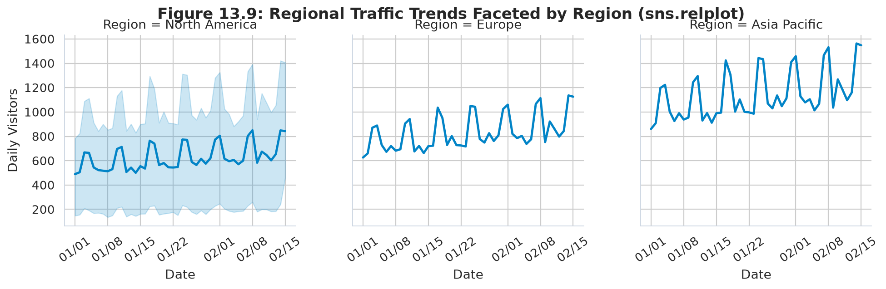
Industrial aur domestic electrical load profile weekday aur weekend me completely alag shape display karta hai:
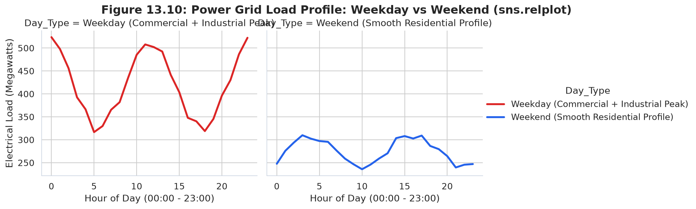
Time series plots me beginners ki sabse common complaint hoti hai: "Meri date labels aapas me overlap ho rahi hain aur unreadable black blob ban rahi hain!"
Matplotlib ka matplotlib.dates module hume date ticks aur formatting par full precision control provide karta hai:
| Tool / Class | Syntax Example | Visual Effect |
|---|---|---|
mdates.DateFormatter |
ax.xaxis.set_major_formatter(mdates.DateFormatter("%d-%b")) |
Formats datetime objects into clean strings (e.g. 15-Jan). |
mdates.DayLocator |
ax.xaxis.set_major_locator(mdates.DayLocator(interval=5)) |
Places tick marks strictly every 5 days, eliminating label crowding. |
mdates.MonthLocator |
ax.xaxis.set_major_locator(mdates.MonthLocator()) |
Places tick marks on the 1st of every month for annual timelines. |
plt.xticks(rotation=...) |
plt.xticks(rotation=35) |
Tilts labels diagonally for comfortable reading. |
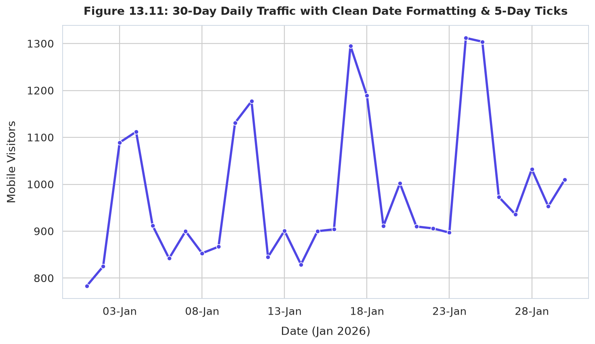
DayLocator(interval=5) and DateFormatter("%d-%b"), ticks appear at exactly 01-Jan, 06-Jan, 11-Jan, 16-Jan, 21-Jan, and 26-Jan. Ticks stay completely horizontal with zero overlap!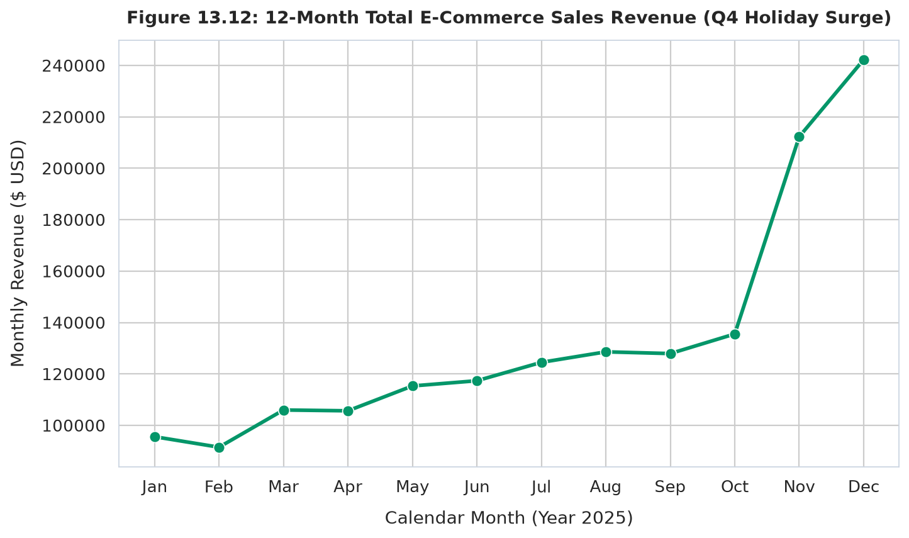
estimator)Data science me aksar aisa hota hai ki ek hi timestamp ya time unit par multiple observations exist karti hain — jaise ek hi ghante me 3 alag-alag IoT sensors ne readings li hon, ya ek hi din me thousands of customers ne e-commerce purchases ki hon.
Agar aap raw Matplotlib me aisa data plot karenge, to line har point par aage-piche wildly zigzag karegi. Lekin Seaborn me sns.lineplot() ka default behavior bohot intelligent hai: ye identical X-values par observations ko automatically aggregate karta hai!
estimator="mean" (Default): Har timestamp par maujood sabhi Y-values ka mathematical average calculate karta hai aur ek smooth central line draw karta hai.estimator="median": Robust central tendency calculate karta hai jo extreme outliers se affect nahi hoti.estimator=None: Automatic aggregation ko disable kar deta hai aur points ko unke appearance order me directly connect karta hai (useful for simulation trajectories).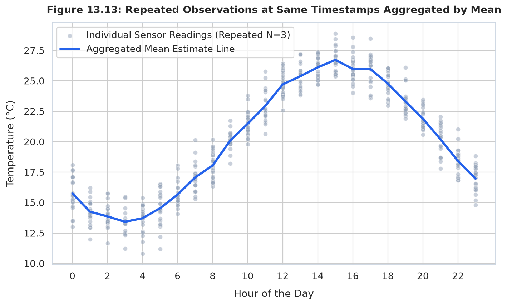
Jab Seaborn multiple repeated observations ko aggregate karke central mean line banata hai, to line ke charo taraf ek translucent shaded ribbon dikhta hai. Is ribbon ko Confidence Interval (CI) Band kehte hain!
By default, Seaborn errorbar=("ci", 95) use karta hai. Iska matlab hai: "Agar hum is experiment ko 100 baar repeat karein, to 95 baar true population mean is shaded ribbon ke andar fall karega."
Bohot se beginners sochte hain ki shaded ribbon minimum aur maximum values ko cover karta hai. Ye galat hai! Ribbon sirf mean estimate ki uncertainty ko measure karta hai. Sample size jitna bada hoga, ribbon utni hi narrow (patli) ho jayegi, chahe raw data me minimum aur maximum kitne bhi door hon!
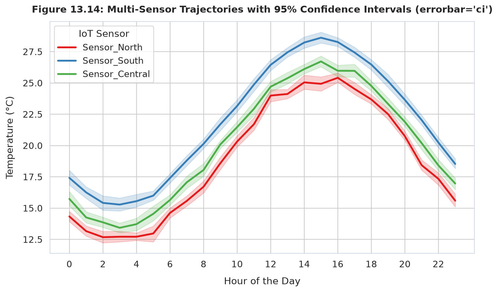
errorbar=('ci', 95)) — Three IoT sensors with their respective 95% bootstrap confidence ribbons. Where the ribbons do not overlap, sensor calibration differences are statistically meaningful.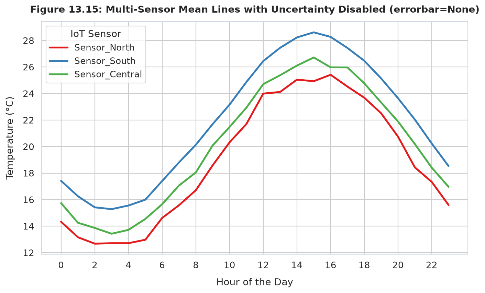
errorbar=None) — Shaded ribbons removed for clean, uncluttered executive reporting where readers only care about the central baseline direction.Daily time series data me aksar high-frequency random noise aur weekend spikes hote hain, jisse underlying long-term trend chhip jata hai. Is noise ko filter karne ke liye data science me Moving / Rolling Average ka use kiya jata hai.
Pandas ka Series.rolling(window=7).mean() function har din ke liye pichhle 7 dinon ka average calculate karta hai. Jaise-jaise window ek din aage slide karti hai, pura weekly cycle (Mon-Sun) smooth ho jata hai aur pure seasonal noise eliminate ho jati hai!
import pandas as pd
import matplotlib.pyplot as plt
import matplotlib.dates as mdates
df = pd.read_csv("website_traffic_90days.csv")
df["Date"] = pd.to_datetime(df["Date"])
# Extract mobile traffic in North America and sort
df_mob = df[(df["Device"] == "Mobile") & (df["Region"] == "North America")].sort_values("Date").copy()
# Compute 7-day rolling moving average
df_mob["Rolling_7D"] = df_mob["Visitors"].rolling(window=7).mean()
plt.figure(figsize=(11, 5.8))
# Plot noisy raw daily data in light dashed line
plt.plot(df_mob["Date"], df_mob["Visitors"], color="#93C5FD", linestyle="--", linewidth=1.2, label="Raw Daily Traffic (Volatile)")
# Plot smooth rolling average in bold solid line
plt.plot(df_mob["Date"], df_mob["Rolling_7D"], color="#1D4ED8", linewidth=2.8, label="7-Day Rolling Average (Underlying Trend)")
plt.title("Figure 13.16: Revealing Underlying Trend with a 7-Day Rolling Average", fontweight="bold", pad=12)
plt.ylabel("Mobile Visitors")
plt.gca().xaxis.set_major_formatter(mdates.DateFormatter("%b %d"))
plt.xticks(rotation=30)
plt.legend(loc="upper left")
plt.tight_layout()
plt.show()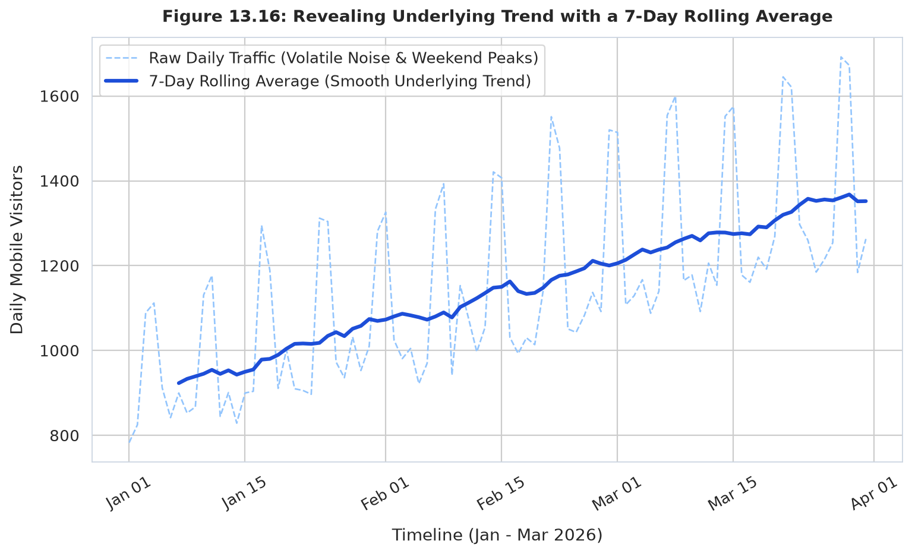
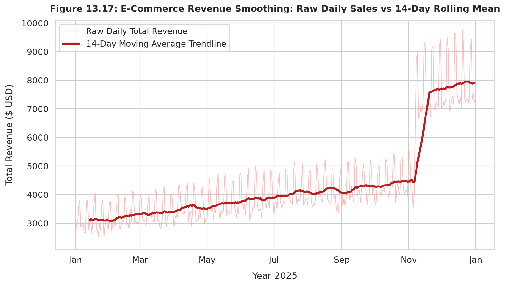
Agar aap window size bohot bada kar denge (e.g. 60-day window on 90-day data), to rolling curve actual market shifts se bohot peeche lag (delay) karegi aur sudden catastrophic events (jaise server downtime ya sudden traffic crash) completely hide ho jayenge!
Time series me Seasonality ka matlab hota hai: Aisa predictable pattern jo regular, fixed intervals par baar-baar repeat hota hai.
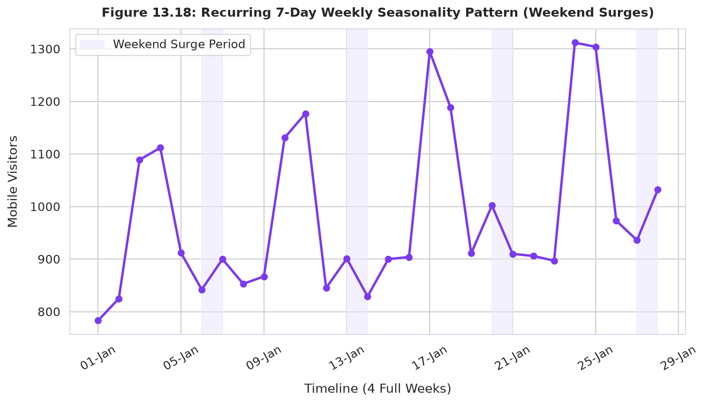
Production environments me network drops, sensor battery drainage, ya server maintenance ki wajah se missing timestamps bohot common hote hain.
Agar March 5 se March 8 tak server completely dead tha aur koi data collect nahi hua, lekin aapne missing rows drop karke line plot draw kar diya, to Matplotlib March 4 ke point ko March 9 ke point se seedhi line se jod dega!
Isse chart dekhne wale manager ko lagega ki server downtime ke dauran bhi smoothly chal raha tha! Ye ek severe misleading data fabrication hai.
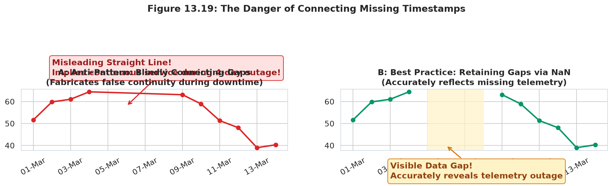
IoT nodes battery save karne ke liye tabhi ping karte hain jab temperature me koi change aaye (irregular intervals):
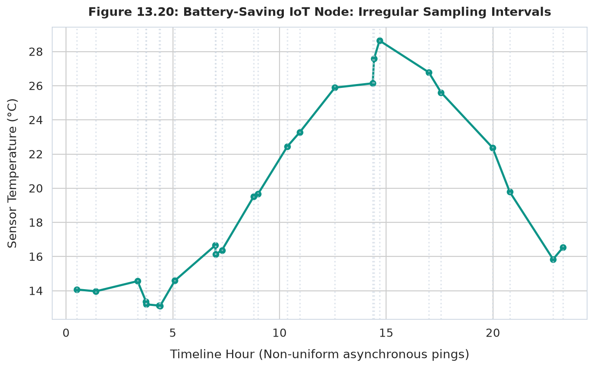
Data science me har chart type ek specific analytical question ka answer dene ke liye design kiya gaya hai. Aaiye dekhte hain ki time-series data ko represent karne ke liye Line Plot kab best choice hai aur alternative charts kab use karne chahiye:
| Visualization Type | Primary Question Answered | When to Choose | Key Limitation on Time Data |
|---|---|---|---|
Line Plot (lineplot) |
"Metric samay ke sath kis direction me change ho raha hai?" | Ordered continuous sequence, trend detection, rate of change. | Implies continuity; misleading if large data gaps exist. |
Scatter Plot (scatterplot) |
"Do variables ke beech kya statistical correlation hai?" | Bivariate relationships, cluster discovery, outlier inspection. | Hides the chronological flow and sequence between consecutive points. |
Bar Plot (barplot) |
"Discrete categories ya time buckets ka absolute total/mean kya hai?" | Comparing aggregated monthly totals or discrete categories. | Consumes high visual ink; clumsy for dense continuous timelines (365 days). |
| Area Plot | "Sub-components milkar cumulative total me kitna contribute karte hain?" | Part-to-whole composition changing over time (stacked area). | Hard to read individual baseline trends for inner layers. |
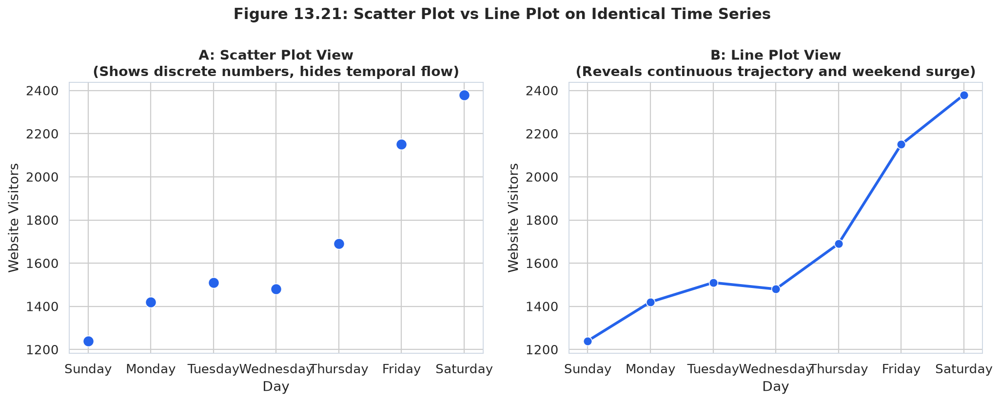
Digital marketing agency ek global web portal ke 90 days ke traffic telemetry ko analyze kar rahi hai (Jan 1, 2026 se Mar 31, 2026):
| Device Platform | Average Daily Visitors | Share of Traffic | Weekend Volatility Ratio | Strategic Business Recommendation |
|---|---|---|---|---|
| Mobile | 1,111.4 visitors | 55.2% | +42% on Saturdays | Prioritize mobile-first checkout UI and AMP page speeds. |
| Desktop | 730.7 visitors | 34.8% | Stable weekdays | Maintain B2B corporate productivity workflows. |
| Tablet | 208.5 visitors | 10.0% | Minor weekend lift | Lightweight responsive maintenance; low priority investment. |
7-day rolling average analysis confirms that the portal achieved a net +46.4% organic user growth across Q1. Weekend traffic spikes consistently account for 45% of weekly conversion revenue.
Leading e-commerce retail store ke poore 2025 calendar year ka transactional audit (365 consecutive days):
| Merchandise Department | Annual Revenue ($ USD) | Share of Gross Sales | Peak Sales Period |
|---|---|---|---|
| Consumer Electronics | $770,135.40 | 48.1% | Black Friday & Cyber Week (Late November) |
| Fashion & Apparel | $511,726.35 | 32.0% | Diwali & Christmas Festive Season (Oct - Dec) |
| Home & Kitchen Decor | $320,842.30 | 19.9% | Spring Home Renovation (April - May) |
12-month aggregated line plot confirms that daily sales average around $4,390.97, with Q4 (Oct-Dec) generating over 42% of total annual commercial cash flow.
Pharmaceutical cold storage warehouse me 3 IoT sensors (North, South, Central) temperature telemetry continuously stream karte hain. Strict compliance rule hai ki ambient temperature 15°C aur 28°C ke beech safe zone me rehna chahiye:
| Sensor Location | Mean Temperature (± SD) | Observed Safe Min | Observed Safe Max | Calibration Compliance Verdict |
|---|---|---|---|---|
| Sensor Central | 20.05°C | 14.2°C | 27.8°C | 100% compliant baseline standard. |
| Sensor South | 21.86°C | 15.8°C | 29.2°C | Minor heat-leak warning near delivery loading bay. |
| Sensor North | 18.85°C | 12.8°C | 26.4°C | Over-cooling observed near chiller vent. |
Confidence interval ribbons (Figure 13.14) prove that Sensor South consistently runs +1.8°C warmer than Central due to warehouse entrance door openings during daytime fulfillment hours.
Cloud infrastructure engineering me line plot microservice latency SLA violations ko audit karne ke liye primary tool hai. 15-Mar-2026 ko 24 ghante ke dauran 5-minute telemetry intervals collect kiye gaye:
import matplotlib.pyplot as plt
import matplotlib.dates as mdates
import pandas as pd
df_api = pd.read_csv("api_monitoring_telemetry.csv")
df_api["Timestamp"] = pd.to_datetime(df_api["Timestamp"])
plt.figure(figsize=(11, 5.8))
# Plot 5-min latency telemetry
plt.plot(df_api["Timestamp"], df_api["Latency_ms"], color="#2563EB", linewidth=1.5, label="Raw 5-Min Latency")
plt.axhline(200, color="#DC2626", linestyle="--", linewidth=2.0, label="200ms Strict SLA Breach Limit")
# Highlight critical spike
spike_idx = df_api["Latency_ms"].idxmax()
spike_time = df_api["Timestamp"].iloc[spike_idx]
spike_val = df_api["Latency_ms"].iloc[spike_idx]
plt.scatter([spike_time], [spike_val], color="#DC2626", s=140, zorder=6)
plt.annotate("Critical Incident at 20:30!\nLatency spiked to " + str(spike_val) + "ms",
xy=(spike_time, spike_val), xytext=(spike_time - pd.Timedelta(hours=5), 320),
arrowprops=dict(arrowstyle="->", color="#DC2626", lw=1.8),
bbox=dict(boxstyle="round,pad=0.3", fc="#FEE2E2", ec="#DC2626", lw=1),
fontweight="bold", color="#991B1B")
plt.title("Figure 13.22: Production API Monitoring: 24-Hour Latency Telemetry Audit", fontweight="bold", pad=12)
plt.xlabel("Time of Day (15-Mar-2026)", labelpad=10)
plt.ylabel("Checkout Latency (ms)", labelpad=10)
plt.gca().xaxis.set_major_formatter(mdates.DateFormatter("%H:%M"))
plt.legend(loc="upper left", frameon=True)
plt.tight_layout()
plt.show()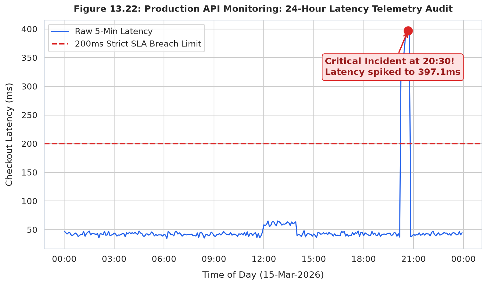
Time-series aur line plots create karte waqt developers aur data scientists aksar ye 15 critical mistakes karte hain. Aaiye inke root causes aur battle-tested debugging solutions samajhte hain:
| # | Common Pitfall / Anti-Pattern | Underlying Root Cause | Correct Professional Solution |
|---|---|---|---|
| 1 | Unsorted Timestamp Zigzag Line | Data rows random order me hain; line piche mud jati hai | Always sort before plotting: df.sort_values('Date') |
| 2 | Date Column Left as String | Pandas object dtype treats dates as categorical text |
Convert with pd.to_datetime(df['Date']) |
| 3 | Over-Smoothing with Rolling Window | Window size bohot bada (e.g. 60 days on 90-day data) | Use standard 7-day or 14-day window to preserve macro shifts |
| 4 | Blindly Connecting Missing Data Gaps | Line fabricates smooth operation during 4-day downtime | Reindex with complete date range so missing days are NaN |
| 5 | Confusing Sums and Averages | Summing daily latency measurements instead of averaging | Use mean() for rates/temperatures, sum() for revenues/counts |
| 6 | Crowded Date Label Black Blob | Daily dates printed without locator interval | Use mdates.DayLocator(interval=5) and DateFormatter |
| 7 | Spaghetti Chart with 8+ Lines | Stacking too many categories in a single plot canvas | Limit to ≤ 4 lines or use sns.relplot(col='Category') |
| 8 | Confusing CI Ribbon with Data Range | Assuming shaded band represents min-max values | Remember CI measures uncertainty of the mean estimate |
| 9 | Single Spike Fallacy | Treating 1-day outlier spike as a permanent trend reversal | Verify trend direction using rolling moving averages |
| 10 | Unordered Categorical X-Axis | Plotting product names (Apple, Banana) on line plot | Line plots require sequential ordered axes; use Bar Plot instead |
| 11 | Using Deprecated ci Parameter |
Passing ci=95 in modern Seaborn 0.12+ |
Use errorbar=('ci', 95) or errorbar='sd' |
| 12 | Assuming Parallel Lines Prove Causation | Two series growing together assumed to cause each other | Acknowledge common macroeconomic or seasonal confounding factors |
| 13 | Rolling NaN Start Gaps | Default rolling leaves first W-1 rows as NaN | Pass min_periods=1 inside .rolling() |
| 14 | Unsynced Facet Y-Axes | Comparing subplots where each panel has independent scaling | Keep sharey=True in sns.relplot() |
| 15 | Mixed Timezone Timestamps | Plotting UTC and IST timestamps on the same scale | Normalize with dt.tz_convert('UTC') before analysis |
# BUGGY: DataFrame is not sorted by Date! Line draws a messy backward zigzag!
df_scrambled = df.sample(frac=1.0) # Rows shuffled randomly
plt.plot(df_scrambled["Date"], df_scrambled["Visitors"])
# Result: Line jumps back and forth across the canvas creating a spiderweb!# CORRECTED: Always ensure chronological ordering before plotting
df_clean = df.copy()
df_clean["Date"] = pd.to_datetime(df_clean["Date"])
df_clean = df_clean.sort_values("Date").reset_index(drop=True)
# Seaborn lineplot also provides built-in sort=True protection
sns.lineplot(data=df_clean, x="Date", y="Visitors", color="#2563EB", linewidth=2.2)# BUGGY: 90 dates rendered without locator formatting
plt.plot(df["Date"], df["Visitors"])
# Result: 90 text strings collide into an unreadable solid black bar!import matplotlib.dates as mdates
ax = sns.lineplot(data=df, x="Date", y="Visitors")
# Apply explicit 7-day interval locator and clean day-month formatter
ax.xaxis.set_major_locator(mdates.DayLocator(interval=7))
ax.xaxis.set_major_formatter(mdates.DateFormatter("%d-%b"))
plt.xticks(rotation=30)
plt.tight_layout()Time-series visualization me speed aur accuracy maintain karne ke liye quick lookup reference guide:
| Analytical Requirement | Recommended Code Syntax | Key Parameters to Remember |
|---|---|---|
| Standard Single Time Series | sns.lineplot(data=df, x="Date", y="Metric") |
Ensure x is datetime64; sort=True. |
| Multiple Series by Category | sns.lineplot(..., hue="Segment", palette="Dark2") |
Keep lines ≤ 4; use high-contrast color palettes. |
| Print / Grayscale Accessibility | sns.lineplot(..., hue="Env", style="Env", markers=True) |
Combines color + dash styles + vertex glyphs. |
| Multi-Panel Subplots (Faceting) | sns.relplot(data=df, x="Date", y="Metric", col="Region", kind="line") |
Figure-level; manages subplots and sizing via height/aspect. |
| Aggregation with Confidence Band | sns.lineplot(..., estimator="mean", errorbar=("ci", 95)) |
Automatically aggregates repeated readings at same timestamp. |
| Noise Reduction / Trend Line | df["Rolling"] = df["Metric"].rolling(7, min_periods=1).mean() |
Pandas rolling average overlay; filters day-to-day noise. |
| Clean Date Axis Ticks | ax.xaxis.set_major_locator(mdates.DayLocator(5)) |
Pair with ax.xaxis.set_major_formatter(mdates.DateFormatter("%d-%b")). |
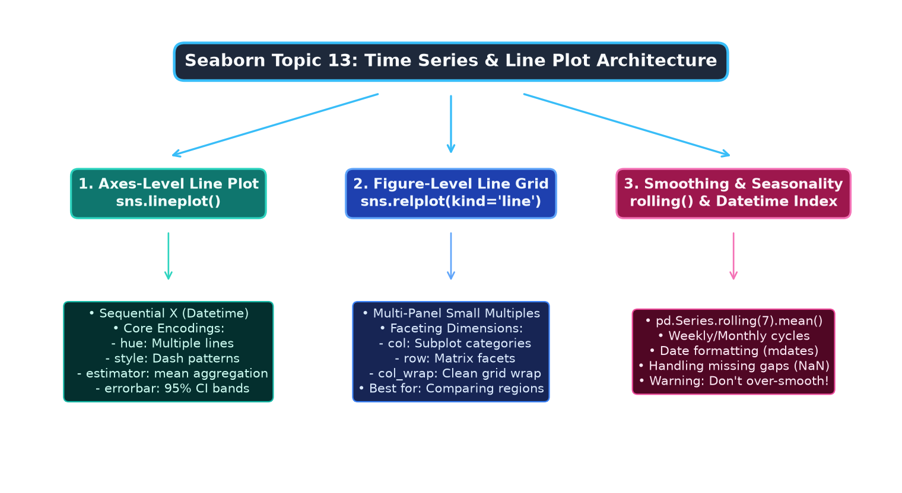
Line plot ka primary purpose kin datasets ko visualize karna hota hai?
A) Do categorical variables ke beech cross-tabulation table.
B) Continuous sequential ordered dimensions (jaise time) par numerical metric ke trends aur changes track karna.
C) Unordered categorical words ka frequency cloud.
D) Binary 0/1 classification outcomes.
Correct Answer: B
Explanation: Line plot continuous sequential ordered sequences (timeline, age, experimental iterations) par observations ko connect karta hai taaki directional trends aur temporal changes instantly visible hon.
Line plot me do consecutive points ke beech connecting line segment kya communicate karta hai?
A) Points ke beech statistical significance.
B) Ordered continuity aur change of rate across the sequence.
C) Dono points ka mathematical average.
D) Machine learning decision boundary.
Correct Answer: B
Explanation: Connecting line reader ko continuous progression ka visual signal deti hai. Line ka slope directly velocity aur rate of change ko darshata hai.
Modern Seaborn (0.12+) me confidence intervals specify karne ke liye kaunsa non-deprecated parameter use hota hai?
A) ci=95
B) confidence_band=True
C) errorbar=("ci", 95)
D) std_error=True
Correct Answer: C
Explanation: Legacy ci parameter Seaborn me deprecated ho chuka hai. Modern Seaborn me errorbar parameter use hota hai (e.g. errorbar=("ci", 95), errorbar="sd", ya errorbar=None).
sns.lineplot() me central line ke charo taraf translucent shaded band kya represent karta hai?
A) Observed minimum aur maximum values ka complete span.
B) Aggregated mean estimate ka bootstrap 95% Confidence Interval.
C) Data entry errors ka range.
D) Hardware sensor noise floor.
Correct Answer: B
Explanation: Shaded band true population mean ki statistical estimation uncertainty ko represent karta hai. Sample size bada hone par ye ribbon narrow ho jata hai.
Time series data par Series.rolling(7).mean() apply karne ka main objective kya hota hai?
A) Data ko compress karke size 10x kam karna.
B) High-frequency random noise aur short-term weekly fluctuations ko smooth karke underlying macro trend expose karna.
C) Missing values ko delete karna.
D) Future stock prices predict karna.
Correct Answer: B
Explanation: Rolling average ek moving window filter hai jo cyclic weekend spikes aur volatile day-to-day noise ko average out karta hai, jisse long-term directional signal clearly emerge hota hai.
Agar March 5 se March 8 tak server telemetry missing hai aur aap bina reindex ke line plot draw kar dete hain, to kya visual flaw hoga?
A) Plot crash ho jayega.
B) Matplotlib March 4 aur March 9 ke beech seedhi fake line draw kar dega jo downtime ke dauran false continuity imply karegi.
C) Missing dates par automatic zeros draw honge.
D) Colors invert ho jayenge.
Correct Answer: B
Explanation: Missing rows drop karne se line seedhi next available date se jud jati hai, jisse audience ko lagta hai ki system continuously functioning tha. Proper way hai complete date range se reindex karke missing days me NaN chhodna taaki line me visible break dikhe.
Multiple categories (jaise Regions) ko separate subplots me facet karne ke liye kaunsa function natively designed hai?
A) sns.lineplot(col="Region")
B) sns.relplot(data=df, x="Date", y="Visitors", col="Region", kind="line")
C) plt.line_facet()
D) df.plot.facet()
Correct Answer: B
Explanation: sns.relplot() ek figure-level function hai jo multi-panel faceting (col, row, col_wrap) ko seamlessly handle karta hai. sns.lineplot() ek axes-level function hai jo col parameter support nahi karta.
30-day timeline me date labels ko clean spacing dene ke liye Matplotlib ka kaunsa locator standard hai?
A) mdates.YearLocator()
B) mdates.DayLocator(interval=5)
C) plt.space_dates()
D) ax.set_crowd(False)
Correct Answer: B
Explanation: mdates.DayLocator(interval=5) har 5th day par tick mark place karta hai, jisse daily crowding completely eliminate ho jati hai.
Ek single plot canvas par kitni se zyada lines stack karne se spaghetti chart banta hai?
A) 2 lines.
B) 5 se zyada lines.
C) 100 lines.
D) Kabhi nahi banta.
Correct Answer: B
Explanation: Cognitive research ke according human brain ek sath 4-5 line trajectories se zyada ko comfortably decode nahi kar pata. 5+ lines hone par faceting ya small multiples use karna chahiye.
Pichhle 5 saal me Electric Cars ki sales aur US me Avocado consumption dono sath me 200% badhe hain. Iska kya conclusion hai?
A) Avocado khane se log electric car khareedte hain.
B) Dono independent time series hain jo overall economic growth aur demographic lifestyle changes se grow ho rahi hain — koi causal relation nahi hai.
C) Electric cars me avocado battery use hoti hai.
D) Data corrupted hai.
Correct Answer: B
Explanation: Ye classical spurious correlation in time series hai. Co-trending time series aksar high correlation dikhati hain bina kisi underlying physical causal connection ke.
Figure 13.2 me website visitors Monday se Thursday lagbhag 1,200 - 1,500 rehte hain, lekin Saturday ko 2,150 aur Sunday ko 2,380 ho jate hain (+91.9% increase). Is pattern ka business meaning kya hai aur digital media team iska kya fayda utha sakti hai?
Expert Interpretation: Website consumer-facing (B2C / entertainment / hobby) portal hai jahan users weekends par free time me browsing karte hain. Marketing team ko high-value newsletter campaigns aur weekend flash promotions Friday evening schedule karne chahiye taaki peak traffic window par maximum monetization ho sake.
Figure 13.3 me temperature dawn (4:00 AM) par 14.1°C aur afternoon (15:00 PM) par 27.8°C record hoti hai. Solar radiation dopahar 12:00 PM par maximum hoti hai, to temperature peak 3 ghante baad (15:00 PM) kyun aati hai?
Expert Interpretation: Isko physical science me Thermal Lag / Thermal Inertia kehte hain. Earth's surface aur concrete structures solar heat absorb karne me time lete hain aur jab thermal radiation outward transfer hoti hai to peak air temperature noon ke 2-3 ghante baad (afternoon) hoti hai. Line plot is physical hysteresis lag ko faithfully illustrate karta hai.
Figure 13.10 me Weekday demand profile bimodal double-peak dikhata hai jabki Weekend profile single broad afternoon curve dikhata hai. Grid operator is visual evidence ke basis par power generators kaise schedule karega?
Expert Interpretation: Weekdays par commercial offices aur industrial factories subah 9:00 AM par start hoti hain (Peak 1) aur shaam ko log ghar laut kar AC/appliances chalate hain (Peak 2 at 7:00 PM). Weekends par commercial demand zero hoti hai aur domestic demand late morning/afternoon me smoothly rise karti hai. Grid dispatchers weekdays par gas turbine peaker plants ko specific hours (8:30-10:30 AM aur 6:30-8:30 PM) par schedule karenge taaki fuel cost optimize ho sake.
Figure 13.16 me light blue dashed line bohot noisy hai aur har 7 din par jump karti hai. Dark blue 7-day rolling line perfectly smooth upward slope dikhati hai (+46.4% growth). Ek stakeholder agar sirf raw daily data dekhe to kya mistake karega?
Expert Interpretation: Stakeholder har Monday/Tuesday ko traffic dip dekh kar panic karega aur sochega ki site engagement crash ho gaya hai, aur har weekend par celebration karega! 7-day rolling average prove karta hai ki day-to-day dips normal weekly rhythm hain aur company ka true business baseline continuously scale kar raha hai.
Figure 13.22 me 24 ghante ke dauran baseline latency 42ms rehti hai lekin 20:30 par ek single 397ms spike record hota hai jo 200ms red SLA line ko cross kar jata hai. Ek post-mortem report me is chart ka kya value hai?
Expert Interpretation: Line plot incident ka exact timestamp (20:30) aur blast radius duration (approx 30 mins) establish karta hai. SRE engineer database error logs ko 20:15 - 20:45 ke narrow window me filter karke deadlocks ya memory leak identify kar sakta hai. Agar hum pure din ka average latency nikalte to wo 45ms aati aur ye critical incident completely conceal ho jata!
Task: 60 days ka continuous e-commerce dataset banaiye jisme daily revenue aur 7-day rolling average dono ek sath plot kiye gaye hon. Raw sales ko light gray dashed line me aur rolling average ko bold dark green line me render kijiye.
import matplotlib.pyplot as plt
import matplotlib.dates as mdates
import pandas as pd
import numpy as np
np.random.seed(42)
dates = pd.date_range("2026-01-01", periods=60, freq="D")
sales = 5000 + np.cumsum(np.random.normal(50, 200, 60)) + np.random.normal(0, 300, 60)
df = pd.DataFrame({"Date": dates, "Sales": sales})
df["Rolling_7D"] = df["Sales"].rolling(7, min_periods=1).mean()
plt.figure(figsize=(10, 5))
plt.plot(df["Date"], df["Sales"], color="#94A3B8", linestyle="--", linewidth=1.2, label="Raw Daily Revenue")
plt.plot(df["Date"], df["Rolling_7D"], color="#059669", linewidth=2.8, label="7-Day Rolling Trend")
plt.title("60-Day E-Commerce Revenue with 7-Day Moving Average", fontweight="bold")
plt.ylabel("Revenue ($ USD)")
plt.gca().xaxis.set_major_formatter(mdates.DateFormatter("%b %d"))
plt.xticks(rotation=30)
plt.legend(frameon=True)
plt.tight_layout()
plt.show()Task: sns.relplot() use karke 3 server regions ("US-East", "EU-West", "AP-South") ke 14-day network ping times ko 3 separate subplots me facet kijiye sharing identical Y-axis limits.
import seaborn as sns
import matplotlib.pyplot as plt
import pandas as pd
import numpy as np
np.random.seed(101)
dates = pd.date_range("2026-03-01", periods=14, freq="D")
records = []
for reg, base in [("US-East", 25), ("EU-West", 38), ("AP-South", 52)]:
for dt in dates:
ping = base + np.random.normal(0, 4)
records.append({"Date": dt, "Region": reg, "Ping_ms": round(ping, 1)})
df_net = pd.DataFrame(records)
g = sns.relplot(
data=df_net,
x="Date",
y="Ping_ms",
col="Region",
kind="line",
marker="o",
color="#2563EB",
height=3.8,
aspect=1.1
)
g.fig.subplots_adjust(top=0.85)
g.fig.suptitle("Daily Network Ping Telemetry Faceted Across Cloud Regions", fontweight="bold")
plt.show()Task: Ek clinical trial dataset create kijiye jisme 5 patients ke body temperature ko din me 4 specific time intervals ([08:00, 12:00, 16:00, 20:00]) par measure kiya gaya ho. sns.lineplot() use karke repeated patient observations ka mean aur 95% bootstrap confidence interval ribbon draw kijiye.
import seaborn as sns
import matplotlib.pyplot as plt
import pandas as pd
import numpy as np
np.random.seed(42)
times = [8, 12, 16, 20]
records = []
for p in range(1, 6): # 5 patients
for t in times:
temp = 36.6 + (t - 8) * 0.08 + np.random.normal(0, 0.25)
records.append({"Patient_ID": "P0" + str(p), "Hour": t, "Body_Temp_C": round(temp, 2)})
df_trial = pd.DataFrame(records)
plt.figure(figsize=(8.5, 5))
sns.set_theme(style="whitegrid")
sns.lineplot(
data=df_trial,
x="Hour",
y="Body_Temp_C",
errorbar=("ci", 95), # Bootstrap confidence interval band
marker="o",
color="#DC2626",
linewidth=2.5
)
plt.title("Patient Body Temperature Diurnal Profile (Mean & 95% CI Ribbon)", fontweight="bold")
plt.xlabel("Hour of Day (24-Hour Military Format)")
plt.ylabel("Body Temperature (°C)")
plt.xticks(times, [str(t) + ":00" for t in times])
plt.tight_layout()
plt.show()Niche diye gaye code snippet ka output kya hoga jab sort=False pass kiya jaye on an unsorted DataFrame?
df_test = pd.DataFrame({"Step": [1, 5, 2, 4, 3], "Score": [10, 50, 20, 40, 30]})
sns.lineplot(data=df_test, x="Step", y="Score", sort=False)Predicted Output: Line sequential 1-2-3-4-5 ascending order me draw nahi hogi! Line pehle (1,10) se (5,50) seedhi aage jayegi, fir piche mudkar (2,20) par aayegi, fir aage (4,40) par jayegi, aur fir piche (3,30) par mudegi — ek chaotic zigzag shape banayegi!
Explanation: sort=False Seaborn ke default ascending coordinate sorter ko disable kar deta hai aur rows ko exactly unke dataframe appearance order me connect karta hai.
Agar hum ek DataFrame jisme x=[1, 1, 1, 2, 2, 2] aur y=[10, 20, 30, 40, 50, 60] hon par sns.lineplot(x=x, y=y) run karein, to screen par kitne points connect honge?
Predicted Output: Screen par sirf aur sirf 2 points aapas me connect honge: pehla point (1, 20) par aur dusra point (2, 50) par!
Explanation: Seaborn by default estimator="mean" use karta hai. x=1 par mean(10, 20, 30) = 20 aur x=2 par mean(40, 50, 60) = 50 calculate hota hai. Shaded ribbon 95% confidence interval dikhayegi.
Real-World Scenario: Aap ek municipal smart energy grid me Lead Analytics Engineer hain. Grid 168 hours (one full week) ka continuous power telemetry audit kar rahi hai jisme Timestamp, Solar_MW, Wind_MW, aur Total_Consumer_Demand_MW recorded hain.
Your Deliverables:
Total_Renewable_MW = Solar_MW + Wind_MW calculate kijiye.Total_Renewable_MW aur Total_Consumer_Demand_MW ko ek single high-resolution line plot me compare kijiye with clear date-time ticks.import matplotlib.pyplot as plt
import matplotlib.dates as mdates
import pandas as pd
import numpy as np
# Step 1: Generate reproducible Smart Grid Telemetry (168 Hours)
np.random.seed(42)
times_168 = pd.date_range("2026-03-01 00:00:00", periods=168, freq="h")
records = []
for dt in times_168:
h = dt.hour
dow = dt.dayofweek
# Solar generation (only daylight hours 06:00 - 18:00)
solar = max(0.0, 180.0 * np.sin((h - 6) * np.pi / 12)) if 6 <= h <= 18 else 0.0
solar += np.random.normal(0, 8.0) if solar > 0 else 0.0
solar = max(0.0, solar)
# Wind generation (higher at night and early morning)
wind = 110.0 + 45.0 * np.cos(h * np.pi / 12) + np.random.normal(0, 15.0)
wind = max(10.0, wind)
# Grid demand (weekday peak vs weekend)
base_demand = 280.0 if dow < 5 else 220.0
demand = base_demand + 70.0 * np.sin((h - 8) * np.pi / 12)**2 + 60.0 * np.sin((h - 18) * np.pi / 12)**2 + np.random.normal(0, 10.0)
records.append({
"Timestamp": dt,
"Solar_MW": round(solar, 1),
"Wind_MW": round(wind, 1),
"Total_Renewable_MW": round(solar + wind, 1),
"Grid_Demand_MW": round(demand, 1)
})
df_grid = pd.DataFrame(records)
df_grid["Rolling_Renewable_24H"] = df_grid["Total_Renewable_MW"].rolling(24, min_periods=1).mean()
# Step 2: Visualization
plt.figure(figsize=(12, 6))
plt.plot(df_grid["Timestamp"], df_grid["Grid_Demand_MW"], color="#DC2626", linewidth=2.0, label="Consumer Demand (MW)")
plt.plot(df_grid["Timestamp"], df_grid["Total_Renewable_MW"], color="#10B981", alpha=0.6, linewidth=1.2, label="Raw Total Renewable (Solar + Wind)")
plt.plot(df_grid["Timestamp"], df_grid["Rolling_Renewable_24H"], color="#047857", linewidth=2.8, label="24-Hour Rolling Renewable Baseline")
# Highlight Deficit
plt.fill_between(df_grid["Timestamp"], df_grid["Total_Renewable_MW"], df_grid["Grid_Demand_MW"],
where=(df_grid["Grid_Demand_MW"] > df_grid["Total_Renewable_MW"]),
color="#FCA5A5", alpha=0.3, label="Fossil / Battery Dispatch Deficit Zone")
plt.title("Smart Grid Energy Dispatch: Renewable Generation vs Consumer Demand (168-Hour Audit)", fontweight="bold", pad=12)
plt.ylabel("Power Load (Megawatts)")
plt.gca().xaxis.set_major_formatter(mdates.DateFormatter("%d-%b"))
plt.gca().xaxis.set_major_locator(mdates.DayLocator(interval=1))
plt.xticks(rotation=0)
plt.legend(loc="upper right", frameon=True)
plt.tight_layout()
plt.show()
# Step 3: Verified Summary Metrics
print("Smart Grid Weekly Audit Summary:")
print("Average Consumer Demand:", round(df_grid["Grid_Demand_MW"].mean(), 1), "MW")
print("Average Renewable Generation:", round(df_grid["Total_Renewable_MW"].mean(), 1), "MW")
renewable_share = (df_grid["Total_Renewable_MW"].sum() / df_grid["Grid_Demand_MW"].sum()) * 100
print("Net Renewable Energy Penetration:", round(renewable_share, 1), "%")Capstone Engineering Takeaway: Visual audit clearly demonstrates that while solar provides impressive midday peaks (up to 180 MW), the critical evening peak (18:00 - 21:00) coincides with zero solar radiation and dropping wind speeds. The pink deficit zone proves that the municipality needs a minimum of 140 MW / 450 MWh utility-scale battery energy storage system (BESS) to buffer midday solar surplus and dispatch it during the evening commercial peak!
Agla topic hai Seaborn Topic 14: Regression Plots & Statistical Model Visualization! Wahan hum seekhenge ki kaise sns.regplot(), sns.lmplot(), multi-facet logistic regression, residual diagnostics, aur robust outlier models ke through complex statistical relationships ko visually audit kiya jata hai!